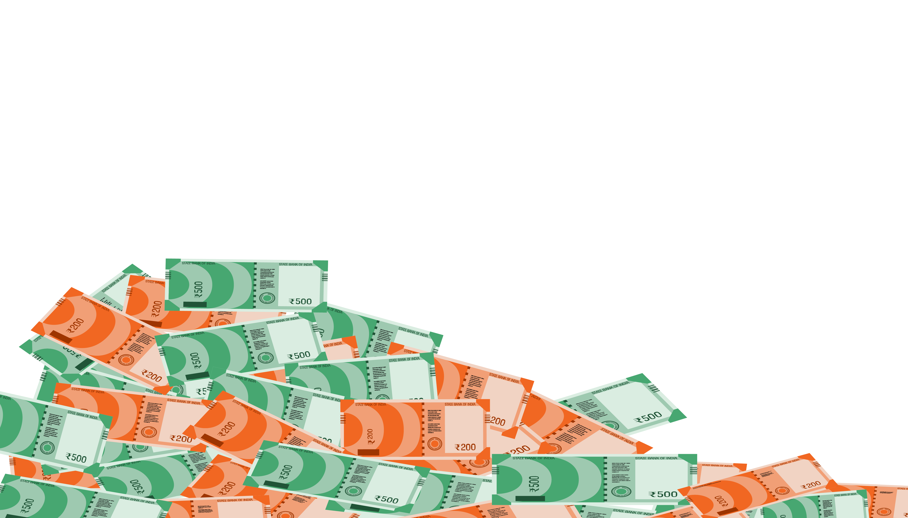

Section 1
Glossary
- Sabha/Lower House: is also known as the House of the People. The Lok Sabha can have up to 552 members who are elected for terms of 5 years at a time
- Rajya Sabha/Upper House: works for the Member States and has 250 allowed members. The Upper House is considered the less powerful house. This house can't be dissolved for any reason
- Prime Minister of India: is the head of the executive branch of the Government of India. Most of the executive powers are exercised by the Prime Minister. He acts as an advisor to the President and is the leader of the Council of Ministers. Current Prime Minister: Narendra Modi
- President of India: signs bills into law or sends them back for reworking. The president is chosen through an election by the members of parliament. The president appoints 2 out of 552 Lok Sabha members and 12 of 250 Rajya Sabha members. Current President: Ram Nath Kovind
- Members of Parliament: in India refers to persons who serve as legislators in the Parliament of India
- Crore: 1,00,00,000 = (10^7) = 0.1 Million in Indian Numbering System
- Lakh: 1,00,000 = (10^5) = 10 Million in Indian Numbering System